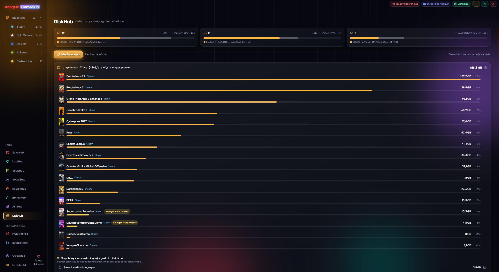

💽
DiskHub
Ile miejsca zajmuje każda gra na twoich dyskach i co zostaje.
DiskHub pokazuje każdy dysk z tym, ile zajmują twoje gry, całą resztą i wolnym miejscem. Niżej każdą bibliotekę (folder, w którym sklep trzyma swoje gry) z jej grami od największej do najmniejszej, a na żółto te, w które nie grałeś od ponad 6 miesięcy.
Znajduje też pozostałości: foldery w twoich bibliotekach, które nie należą już do żadnej gry, zwykle po odinstalowanych grach. Możesz otworzyć dowolną grę lub folder, by zobaczyć, co zajmuje miejsce, jak w TreeSize. DiskHub tylko patrzy: nigdy niczego nie usuwa.
Jak z tego korzystać
- DiskHub jest w panelu bocznym, pod Hubs.
- Za pierwszym razem mierzy sam; «Zmierz» dodaje pliki od nowa, a następnym razem widzisz to od razu.
- Kliknij grę lub pozostałość, by zejść w głąb jej folderów, albo otwórz ją w Eksploratorze plików.
- Gry Xbox pojawiają się razem i są mierzone w całości, programy z Microsoft Store nie są już pokazywane jako pozostałości, pliki skompresowane przez Windows pokazują rozmiar na dysku i jest przycisk „Zatrzymaj”.

✦ Inne funkcje
Chcesz spróbować?
⬇ Pobierz bezpośrednio 🛍️ Pobierz ze sklepu Microsoft StoreWindows 10 i 11 (64-bit) · Za darmo · Aktualizuje się sam